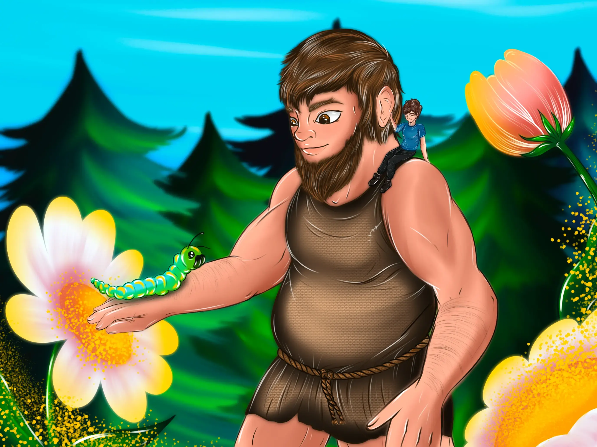
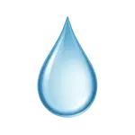

✨
Arzanskân
100%
Ta jauge est vide… ⚡
Pour poursuivre ta visite d’Arzankia, récolte un ingrédient magique !
Monde des Géants


« Un monde démesuré, où même les arbres touchent le ciel et où les rires résonnent comme des tambours sacrés… »
Extrait du livre
Entrée du monde
← Retour